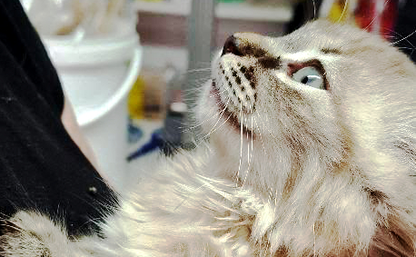
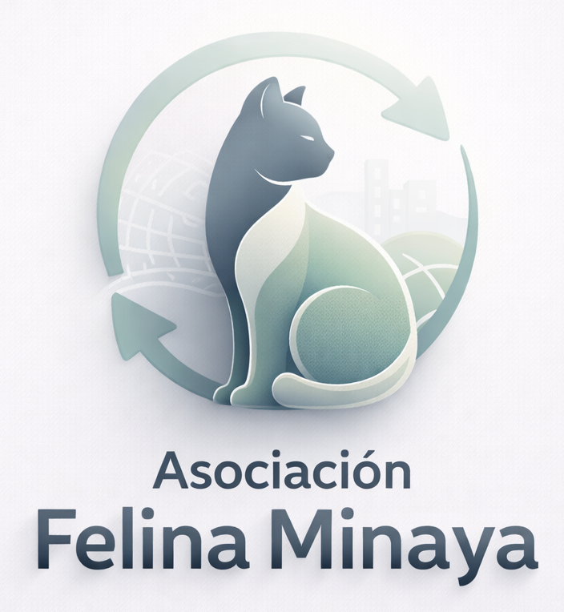
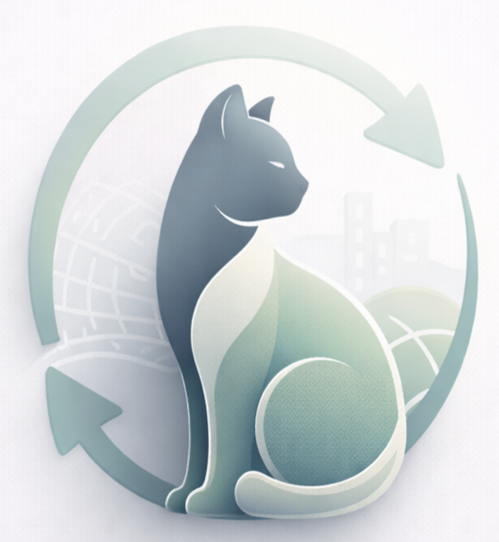

María López
Gestiona campañas de esterilización y la coordinación de voluntarios.

Voluntarios, profesionales veterinarios y familias de acogida que hacen posible el trabajo de Felina Minaya.
Somos un grupo diverso que aporta tiempo, experiencia y cariño para mejorar la vida de los gatos de nuestra comunidad. Aquí tienes a algunas de las personas que forman parte del equipo:
Gestiona campañas de esterilización y la coordinación de voluntarios.

Responsable de protocolos sanitarios y cirugías de esterilización.

Acoge temporalmente a gatos en proceso de recuperación y socialización.
Apoya en campañas de alimentación, transporte y eventos de adopción.